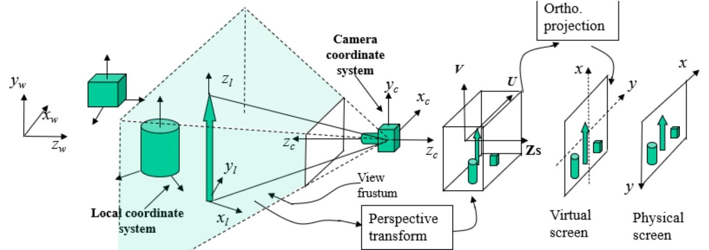

Computer Science graduate and technology enthusiast working in industry as an implementation service engineer. With the mission of developing and advancing technology for humanity .
Computer Science graduate and technology enthusiast working in industry as an implementation service engineer. With the mission of developing and advancing technology for humanity .
Dedicated to science, engineering & technology, I'm a logical yet creative problem solver and forward thinker always looking outside the box
for novel solutions within the tech space.
My broad interests allow me to tackle advanced projects with relative ease being personal, academic or professional I've had particular focus on; software development,
computer science, IoT, automation, 3D Graphics, animation, computer vision and robotics with exposure to industry leading applications. I'm always looking to develop myself and my peers and enjoy discovering new possibilities and applying scientific principles.
I continue to work with key industry leaders and professionals in multinational capacities. Offering consulting knowledge to admirable company
GSK, JLR and various system integrators.
Qualifications (Most relevant)
- Computer Science BSc: 1st
- English Language GCSE: B
- English Literature GCSE: B
- Maths GCSE: B
- Additional science GSCE: A
- IT level 3 Btec: Distinction*
Work experience
- Consulting engineer
- Technical sales representative
- Retail sales consultant
- Rock climbing obstacle course supervisor
- Delivery driver
- children's party host
Skills
- Effective communicator & team player
- Electronics & computer hardware
- Desktop computer builds
- Software Development
- Research & Development
Programming Languages
- HTML5/CSS3
- C++/C#
- Javascript
- Lua
- Python
- JSON
- SQL
My career objective is to improve everyday life through the application
of technology. Due to my broad range of skills within computer science, working
within the IT field to obtain the position of system analytics, systems integration
or similar system orientated roles would be the most attractive for me due to my
interest in the complexity and heterogeneous nature of systems . My most valuable skill is my ability to work creatively
within set logical constraints. More generally I have a broad range of skills
; administrative, analytics, preparation, organization,
self-management, modelling and communication. I have
a preference for working using a hybrid approach and have the adaptability, interest
and aptitude to travel.

This project aims to analyze a large set of data. The set considered is logged 311 calls s government run service in NYC. Tkinter is used for GUI implementation. The csv library is used for
data reading and fragmentation, matplotli is used for data visualization. A report is made to asses the quality of the implementation vs a proposed SQL solution,
the solution is assessed and improvements for the next iteration are considered.

This project aims to create a VR teleopreable mobile service robot using ROS (Robotic operating system).
Have you ever needed to be at home? But you can't be there, why not remote-in to Mai and complete tasks intuitively using VR . Mai is currently in development.
Within this project a fault tolerant distributed sensor network architecture integrated with AWS using MQTT is proposed. Implemented using the open source hardware platform NodeMCU using the ESP8266 wifi module. Experiments are conducted to analyse the effectiveness of the solution and a poster is presented to illistrate the work.
This project tasks the Kuka YouBot to perform pick and place movement of boxes localized using computer vision blob detection within the simulation platform V-Rep. Collision avoidance is also implemented using first-order decision logic.
Outbreak is a text based android game where your decisions effect the story.

Human modelling and animation in Autodesk's software suite, 3DS Max & mya. The report downloadable below details a module overview with a focus on methodology.
In this analysis i compare appropriate data structures and algorithms for applications relating to a florists inventory.
This report details the methodology used in discrete mathematics and functional programming.